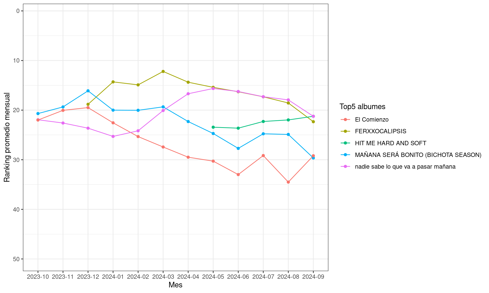
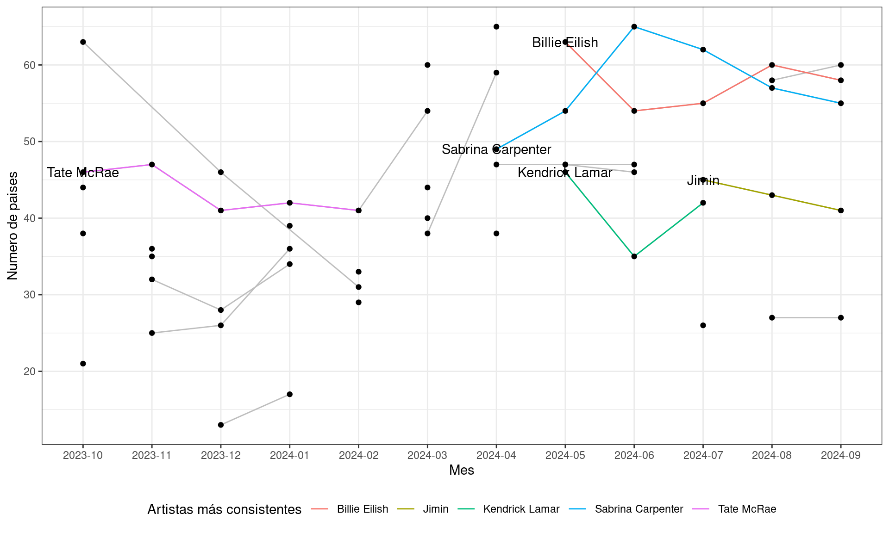
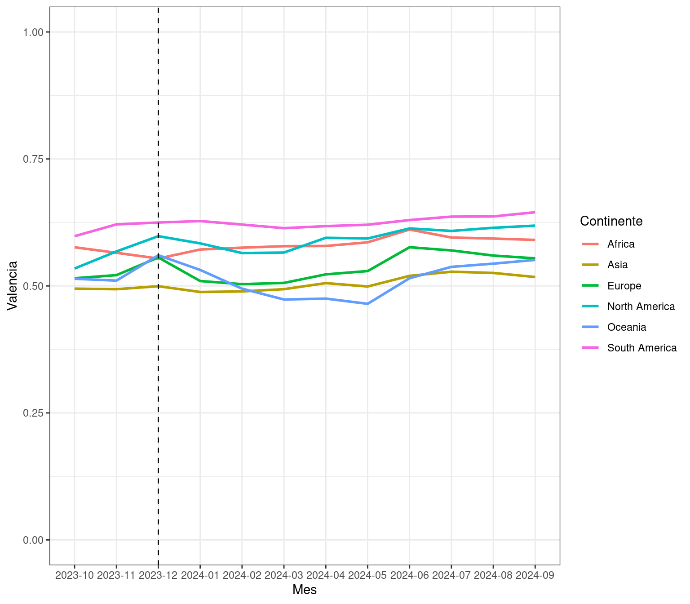

Eres un analista de datos en una plataforma de streaming musical. Tu jefe te ha pedido que analices las tendencias de 73 paises para contestar las siguietes preguntas:
¿Cuáles son los 5 álbumes más populares y cómo ha evolucionado su popularidad promedio (medida a través del ranking de las canciones de cada album) a lo largo del tiempo (mensualmente) en nuestra plataforma de streaming? (muestralo en un gráfico)
Respuesta
Code
data[, snapshot_month :=format(snapshot_date, "%Y-%m")]most_popular_5 <- data[,.N,by = album_name][order(-N),][1:5,]$album_namedata[album_name %in% most_popular_5,.(mean_month_rank =mean(daily_rank)), by = .(album_name,snapshot_month)] %>%ggplot(aes(x = snapshot_month, y = mean_month_rank,color = album_name, group = album_name))+geom_line()+geom_point()+labs(color ="Top5 albumes", y ="Ranking promedio mensual", x ="Mes")+scale_y_reverse(limits =c(50,1))+theme_bw()

Ejercicio 2
2. ¿Cuáles son los 5 artistas que han mantenido una popularidad más constante a nivel internacional a lo largo del tiempo? En este caso vamos a considerar la popularidad como el número de paises en el que un artista es escuchado en el top50.
En particular debes:
Calcular el número de países en los que la música de cada artista es popular para cada mes.
Identificar a los 5 mejores artistas que aparecen de manera consistente en la mayor cantidad de países durante el período de tiempo dado.
Visualizar las tendencias de popularidad mensual de estos 5 mejores artistas, destacando el primer mes en que aparecieron en el conjunto de datos.
Respuesta
Code
popularity_artists <- data[,.N, by = .(artists,country,snapshot_month)][,.(ncountry = .N), by = .(artists, snapshot_month)][,head(.SD, 5),by = snapshot_month]top_consistent_5 <- popularity_artists[,.N,by = artists][order(-N)][1:5]$artistsmin_dates <- popularity_artists[artists %in% top_consistent_5, .(min_date =min(snapshot_month)), by = artists]labels <-merge(min_dates, popularity_artists, by.x =c("artists", "min_date"), by.y =c("artists", "snapshot_month"))ggplot(data = popularity_artists, aes(x = snapshot_month, y = ncountry, group = artists))+geom_line(color ="gray")+geom_line(data = popularity_artists[artists %in% top_consistent_5], aes(color = artists))+geom_point()+geom_text(data = labels, aes(x = min_date, label = artists))+theme_bw()+theme(legend.position ="bottom")+labs(y ="Numero de paises", x ="Mes", color ="Artistas más consistentes")

Ejercicio 3
3. Se busca encontrar patrones entre las características de las canciones populares de cada pais. Por ejemplo: ¿existen diferencias entre el tipo de canciones (felices o tristes) que escuchan paises de diferentes continentes?
Nota: El archivo country.codes.csv tiene la relación entre los códigos de los paises, los nombres de los paises y el continente al que pertenecen. Puedes utilizar funciones del paquete dplyr (left_join()) para unir las tablas.
Respuesta
Code
library(tidyverse)country_codes <-fread("data/country_codes.csv")valence_data <- data[country !="",.(avg_valence =mean(valence)), by = .(snapshot_month,country)] %>%left_join(.,country_codes, by =c("country"="Code"))mean_valence_continent <- valence_data[,.(avg_valence =mean(avg_valence)), by = .(snapshot_month,Continent)]valence_data %>%ggplot(aes(x = snapshot_month, y = avg_valence, group = country, color = Continent))+geom_line(data = mean_valence_continent, aes(group = Continent), size =1)+geom_vline(xintercept =format(as.Date("2023-12-01"), "%Y-%m"), linetype ="dashed")+labs(y ="Valencia", x ="Mes", color ="Continente")+scale_y_continuous(limits =c(0,1))+theme_bw()

Valencia promedio por pais y por continente. La valencia se define como una medida de 0.0 a 1.0 que describe la positividad musical que transmite una pista. Las pistas con alta valencia suenan más positivas (por ejemplo, felices, alegres, eufóricas), mientras que las pistas con baja valencia suenan más negativas (por ejemplo, tristes, deprimidas, enojadas).
Ejercicio 4
A continuación se muestran las definiciones de las características de las canciones:
Popularity: número total de reproducciones que ha tenido la pista y cuán recientes son esas reproducciones.
Acousticness: Una medida de confianza de 0.0 a 1.0 sobre si la pista es acústica. Un valor de 1.0 representa alta confianza en que la pista es acústica.
Danceability: La bailabilidad describe cuán adecuada es una pista para bailar, basada en una combinación de elementos musicales que incluyen tempo, estabilidad del ritmo, fuerza del compás y regularidad general.
Energy: La energía es una medida de 0.0 a 1.0 que representa una percepción de la intensidad y la actividad. Generalmente, las pistas energéticas se sienten rápidas, fuertes y ruidosas.
Instrumentalness: Predice si una pista no contiene voces. Los sonidos como “Ooh” y “aah” se tratan como instrumentales en este contexto. Las pistas de rap o palabra hablada se consideran claramente “vocales”. Cuanto más cercano esté el valor de instrumentalidad a 1.0, mayor es la probabilidad de que la pista no contenga contenido vocal. Los valores superiores a 0.5 están destinados a representar pistas instrumentales, pero la confianza aumenta a medida que el valor se acerca a 1.0.
Liveness: Detecta la presencia de una audiencia en la grabación. Valores más altos de vivacidad representan una mayor probabilidad de que la pista haya sido interpretada en vivo.
Loudness: La sonoridad general de una pista en decibelios (dB). Los valores de sonoridad se promedian en toda la pista y son útiles para comparar la sonoridad relativa de las pistas. La sonoridad es la cualidad de un sonido que se correlaciona psicológicamente con la fuerza física (amplitud).
Mode: El modo indica la modalidad (mayor o menor) de una pista, el tipo de escala del cual se deriva su contenido melódico. Mayor se representa con 1 y menor con 0.
Speechiness: Detecta la presencia de palabras habladas en una pista. Cuanto más se asemeje la grabación exclusivamente al habla (por ejemplo, programa de entrevistas, audiolibro, poesía), más cercano estará el valor de este atributo a 1.0. Los valores superiores a 0.66 describen pistas que probablemente están compuestas completamente de palabras habladas. Los valores entre 0.33 y 0.66 describen pistas que pueden contener tanto música como habla, ya sea en secciones o superpuestas, como en el caso del rap. Los valores por debajo de 0.33 probablemente representan música u otras pistas que no contienen mucha letra.
Tempo: El tempo estimado general de una pista en pulsaciones por minuto (BPM). En terminología musical, el tempo es la velocidad o el ritmo de una pieza determinada y se deriva directamente de la duración promedio de cada pulso.
Valence: Una medida de 0.0 a 1.0 que describe la positividad musical que transmite una pista. Las pistas con alta valencia suenan más positivas (por ejemplo, felices, alegres, eufóricas), mientras que las pistas con baja valencia suenan más negativas (por ejemplo, tristes, deprimidas, enojadas).
4. Utilizando las características de las canciones hipotetiza acerca del tipo de relaciones y las diferencias entre las canciones de diferentes regiones del mundo.